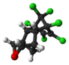

dieldrin

Definition: Dieldrin is an organochloride originally produced in 1948 by J. Hyman & Co, Denver, as an insecticide. Dieldrin is closely related to aldrin, which reacts further to form dieldrin. Aldrin is not toxic to insects; it is oxidized in the insect to form dieldrin which is the active compound. Both dieldrin and aldrin are named after the Diels-Alder reaction which is used to form aldrin from a mixture of norbornadiene and hexachlorocyclopentadiene.
Source: Wikipedia
Wikipedia Page
Wikidata Page